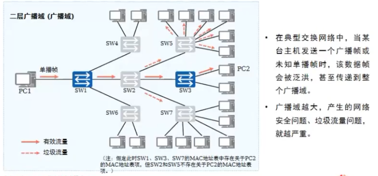
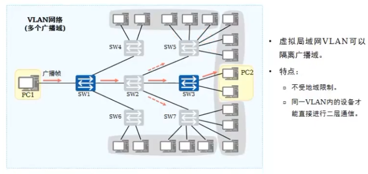
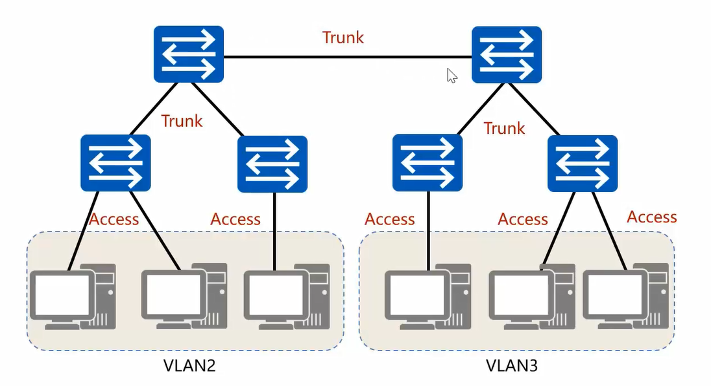
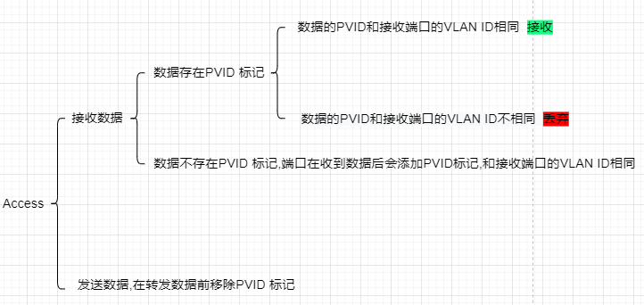
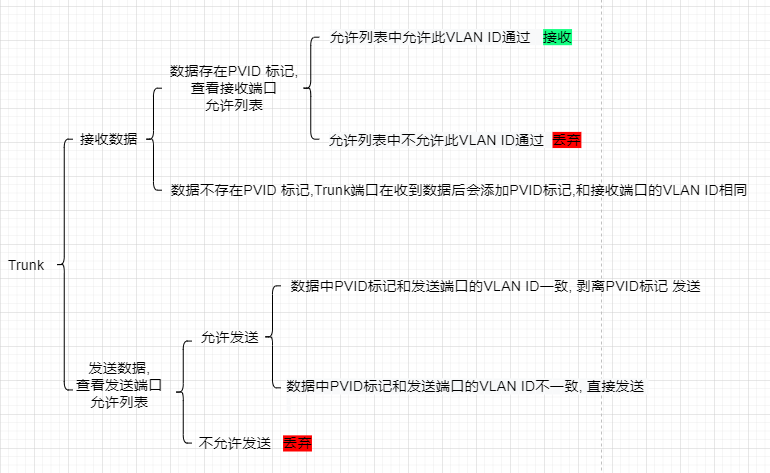
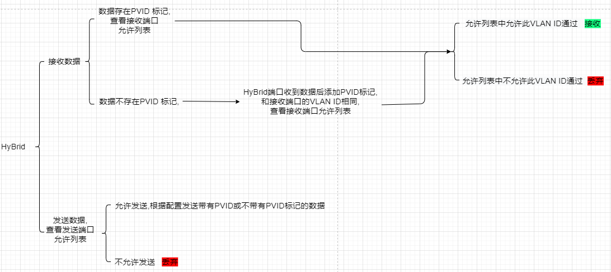

vlan技术的讲解
vlan,是一个纯粹的二层的网络技术,可以从逻辑上将物理局域网划分成多个广播域。
注意 : 其实路由器也可以实现广播域划分,但是交换机更加省钱。
广播域的危害
如下图:仅是给一台设备发送数据,却给其他无关设备发送了数据。造成很多垃圾信息,影响效率。

vlan的效果
当使用vlan后,可以得到如下效果,整个广播域被划分成了几个广播域,减少了垃圾信息,提高效率。

链路类型
电脑设备和交换机之间的链路叫接入链路(access),交换机之间的链路叫干道链路(trunk)

PVID(port vlan id)
PVID表示交换机端口所属于哪个vlan,默认每个端口的PVID都是1
一般来说,VLAN ID的范围可以从1到4094。然而,某些特定的VLAN ID(如0和4095)可能具有特殊用途或限制,因此可能不被用作PVID。
交换机端口类型
端口类型分为Access类型,Trunk类型和HyBrid(华为独有)。不同类型的端口在发送和接收数据时对数据的处理逻辑不同。
Access类型端口用于连接电脑设备和交换机设备,Access端口处理数据逻辑如下 :

Trunk类型端口用于连接两个交换机设备,Trunk端口处理数据逻辑如下 :

HyBrid类型端口既可以连接电脑设备也可以连接交换机设备(华为交换机端口默认类型),HyBrid端口处理数据逻辑如下 :

划分vlan的方法
交换机可以基于 交换机端口划分VLAN 或者 MAC地址划分VLAN。大部分情况下使用这两种方法,其余方法以后需要再研究。
【本地链接】ensp划分vlan操作步骤
基于交换机端口划分VLAN
基于端口划分VLAN的优缺点如下:
优点 :
(1) 【操作简单直观】 : 基于端口划分VLAN是最直接的方式,它依据交换机端口的物理连接关系来定义VLAN成员。
管理员只需要简单地配置端口所属的VLAN,而不需要进行复杂的逻辑判断或地址映射。
(2) 【隔离性好】 : 由于每个VLAN的端口是物理隔离的,因此不同VLAN之间的通信需要通过路由器等设备来实现,这增强了网络的安全性,降低了广播风暴的风险。
(3) 【易于管理】 : 在基于端口的VLAN中,管理员可以清楚地知道哪些设备属于哪个VLAN,便于进行网络监控和故障排查。
缺点 :
(1) 【灵活性差】 : 当设备需要移动或重新连接时,如果目标端口与原始端口不在同一个VLAN中,就需要进行大量的重新配置工作。这种划分方式不适用于需要频繁变动设备位置的网络环境。
(2) 【扩展性差】 : 随着网络规模的扩大和设备的增多,基于端口的VLAN划分方式可能会导致VLAN数量过多,管理复杂度增加。
(3) 【资源利用率低】 : 由于端口与VLAN的绑定关系固定,如果某个VLAN的端口数量过多而实际使用的端口较少,就会造成资源浪费。
MAC地址划分VLAN
基于MAC地址划分VLAN的优缺点如下:
优点 :
(1) 【灵活性高】 : 基于MAC地址划分VLAN可以允许用户在交换网络中改变接入位置,而仍能访问其所属的VLAN。
因为用户的VLAN成员身份是基于其MAC地址确定的,无论设备连接到交换网络的哪个端口,都能自动保留其所属VLAN的成员身份。
(2) 【便于移动管理】 : 对于那些需要频繁移动或变更网络接入位置的设备,基于MAC地址的VLAN划分方式可以大大简化管理任务,无需因为位置变动而重新配置VLAN。
缺点 :
(1) 【配置和管理可能较为复杂】 : 在大型网络中,需要为每个设备的MAC地址配置其所属的VLAN,这可能导致配置任务繁重。
此外,如果设备更换了网卡(即MAC地址发生变化),也需要进行相应的VLAN配置调整。
(2) 【安全性问题】 : 如果攻击者能够伪造合法的MAC地址,那么他们可能会尝试接入不应该访问的VLAN,从而可能对网络安全构成威胁。
因此,需要配合其他安全措施来增强网络的安全性。
(3) 【可能限制网络的扩展性】 : 如果网络中存在大量的设备,并且每个设备都需要基于其MAC地址进行VLAN划分,那么可能会导致VLAN数量过多,增加网络管理的复杂性。